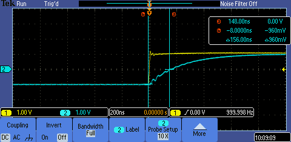

ENGR338 Lab 2017
Fall
Name: Lane Schultz
Lab 1: Spice/RC Circuit for Digital Signal
Abstract:
The
charge of voltage across a capacitor is not instantaneous in an
electric circuit. There is an associated delay in time for a
capacitor to reach a certain voltage. Hence, the times for the
voltage across a capacitor to reach 50% of the input voltage (delay
time) was determined. The delay time of three RC circuits were taken
with theoretical calculations, simulation via LTspice, and an
experiment. Each RC circuit had a 500 ohm resistor. The capacitors used
were 229 pF, 363 pF, and 482 pF in capacitance. Theoretical
calculations yielded a delay time of 79.4 ns, 126 ns, and 167 ns.
Simulation results yielded delay times of 79.1 ns, 126 ns, and 168
ns. Experimental results yielded delay times of 72 ns, 148 ns, and
156 ns. Increasing delay time corresponds to an increase in
capacitance. Quantifying the delay time of a circuit is useful to
understand how a capacitor charges with respect to an input voltage.
Introduction:
Practical
electronic circuits experience impedance from various sources. Some
sources of impedance are difficult to account for because of defects
and/or environmental factors while others are a function of desired
components. Impedance can alter the time response
of a system. Hence, it is useful to define a metric for the delay
time of a circuit. In this laboratory, we define the delay time of a
circuit to be the time that it takes for the voltage drop across a
capacitor of an circuit to be 50% of the input voltage. The circuit
analyzed consists of a resistor and a capacitor (RC circuit). For a
circuit shown in Figure 1, a generic formula can be used to define the
delay time with respect to components used.
Figure 1: An example of an RC circuit is shown.
In the circuit shown in Figure 1, the following relationship can be used to define the delay time theoretically:
t=-RCln(0.5)
In the previous equation, R represents the resistance, C is the capacitance, and t is the delay time.
Equipment:
- Function Generator
- Oscilloscope
- Breadboard
- LTspice
- Resistor: 500 ohms
- Capacitors: 229 pF, 363 pF, and 482 pF
Procedure:
A square wave with a peak-to-peak voltage of 2 volts and a frequency of 1 kHz was used to find the delay time of RC circuits.
The general schematic shown in Figure 1 was used. The resistor was
fixed at a value of 500 ohms. Capacitors of 229 pF, 363 pF, and 482 pF
were used.
Results:
The experimental and simulation reading of voltage with respect to time are shown in Figures 2 through 7.
Figure 2: The oscilloscope display of the 229 pF capacitor circuit is shown.
Figure 3: The simulation display of the 229 pF capacitor circuit is shown.
Figure 4: The oscilloscope display of the 363 pF capacitor circuit is shown.
Figure 5: The simulation display of the 363 pF capacitor circuit is shown.

Figure 6: The oscilloscope display of the 482 pF capacitor circuit is shown.
Figure 7: The simulation display of the 482 pF capacitor circuit is shown.
The delay times of a circuit are tabulated in Table 1.
|
229 pF
|
363 pF
|
482 pF
|
Theoretical
|
79.4 ns
|
126 ns
|
167 ns
|
Simulation
|
79.1 ns
|
126 ns
|
168 ns
|
Experimental
|
72.0 ns
|
148 ns
|
156 ns
|
Table 1: The delay times for three RC circuits are tabulated.
The percent differences were taken using the theoretical values for comparison. Table 2 contains the percent differences.
|
229 pF |
363 pF |
482 pF |
| Simulation |
0.38 %
|
0.00 %
|
0.60 %
|
| Experimental |
9.32 %
|
17.5 %
|
6.59 %
|
Table 2: Percent differences from theoretical calculations are tabulated.
Discussion:
Each method of determining the delay time yielded similar values.
There was less of a discrepancy between theoretical values and
simulation values compared to theoretical values and experimental
values. The larger percent differences for experimental values can be
explained by non-ideal component characteristics. The characteristics
of a circuit depend on the thermal properties, connections, and changes
between material types in a circuit. Theoretical and simulation values
differed negligibly. This difference can be accounted for by incorrect
cursor placement in simulation measurements. It is worthy of note that the larger the capacitance, the longer the delay time.
Conclusion:
The rise time of three RC circuits with different resistors were
determined theoretically, experimentally, and via simulation. The
percent differences were negligible between theoretical and simulation
values. The percent difference between experimental and theoretical
values were found to be 9.32 %, 17.5 %, and 6.56 % for the 229 pF, 363 pF,
and 482 pF capacitors respectively. The percent difference can be
reduced by incorporating thermal and material characteristics of
components into simulation and theoretical calculations.